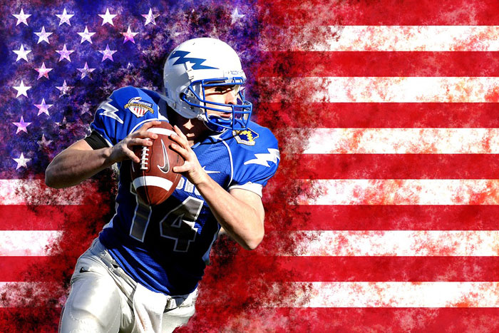

The United States have been a powerhouse in world sports for a long time. Americans take great pride in their sporting accomplishments, and sports are an important part of their culture. There’s no doubt, United States rule in well-known sports such as basketball, baseball and their home grown sport of American football. See a list of the 10 top sports in the USA.
We may consider baseball as their traditional sport for it started in the 18th century, with a semi-pro National Baseball Club in the 1860’s and from that point on, baseball became the “national past time” of Americans. Nowadays, the most played sport in United States is football. Let us not forget that basketball also started in the U.S. in 1891. YMCA had a major role in spreading this sport globally. The first training ground for basketball is in YMCA and these students had disseminated across the globe. The United States also have hosted quite a number of Olympic Games from 1904 (St. Louis, Missouri) to 2002 (Salt Lake City, Utah), and will again in 2028 in LA. They have also won more than the average Olympic medals in virtually all sports. With all these in mind, we also have to mention the long list of great athletes that the U.S. had produced starting with Mike Trout, the famous slugger of today’s baseball season. With 49 stolen bases, leading the league with a 10.9 WAR, he unanimously won the American League and still plays outstandingly from his breakout season up to now. On the other hand, football has Tom Brady. This quarterback led his team, Patriots, to more division titles than any other team in NFL history.
 Speaking of popularity, no one ever came close from the Michael Jordan. This man popularized NBA to the world in the 1980s to 1990s. He also was the most well-rounded and marketed athlete of his generation. No wonder, every basketball player looks up to him. Below are details of sports, sporting events and sports people related to the USA. See also the list the most popular internet searches for "sports" in the US.